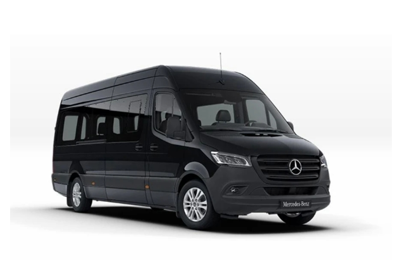

บริการรถเช่า
รถตู้พร้อมคนขับภูเก็ต: คู่มือจองและเลือกใช้บริการ
รวมทุกสิ่งที่ควรรู้ก่อนจอง รถตู้พร้อมคนขับภูเก็ต — ประเภทรถ บริการ ราคา วิธีจอง และคำถามที่พบบ่อย
รถตู้พร้อมคนขับภูเก็ต คืออะไร
 ภาพประกอบบริการ: Infinity Transport Phuket
ภาพประกอบบริการ: Infinity Transport Phuket
รถตู้พร้อมคนขับภูเก็ต คือบริการเช่ารถตู้แบบเหมาพร้อมคนขับมืออาชีพในจังหวัดภูเก็ต โดยลูกค้าไม่ต้องขับเอง ทีมงานดูแลเส้นทาง ความปลอดภัย และจังหวะเวลาตลอดทริป
รูปแบบนี้ต่างจากการเช่ารถขับเอง เพราะคนขับที่คุ้นเส้นทางท้องถิ่น สนามบินภูเก็ต และจุดท่องเที่ยวยอดนิยมจะช่วยลดเวลาที่เสียไปกับการหาที่จอด การขับขึ้นลงเขา และการวางแผนเส้นทาง ทำให้เหมาะกับทั้งนักท่องเที่ยว ครอบครัว หมู่คณา และงานรับรองแขก
หากคุณกำลังมองหาผู้ให้บริการที่เน้นความตรงเวลาและบริการเป็นมืออาชีพ สามารถดูรายละเอียดเพิ่มเติมได้ที่ หน้าแรก Infinity Transport Phuket หรือสอบถามทีมงานผ่าน หน้าติดต่อและจองรถ
ข้อดีของการใช้รถตู้พร้อมคนขับในภูเก็ต
การเลือก รถตู้พร้อมคนขับภูเก็ต มีข้อได้เปรียบหลายประการเมื่อเทียบกับการขับเองหรือเรียกรถแบบจุดต่อจุด:
- ตรงเวลา — คนขับวางแผนเวลาให้ทันเที่ยวบิน นัดหมาย หรือโปรแกรมทัวร์
- ปลอดภัย — คุ้นเส้นทางเขา โค้ง และสภาพถนนในฤดูฝน
- สะดวกสำหรับกลุ่ม — นั่งรถคันเดียวกัน ไม่ต้องแยกหลายคัน
- จอดรถและสัมภาระ — มีคนช่วยดูแลเมื่อแวะจุดท่องเที่ยวหรือร้านอาหาร
- ยืดหยุ่น — ปรับจุดแวะระหว่างทางได้ตามความเหมาะสมของทริป
ลูกค้าหลายท่านเลือกใช้บริการนี้ร่วมกับ บริการรับส่งสนามบินและเหมาเที่ยวรายวัน เพื่อให้ทริปตั้งแต่ลงเครื่องจนถึงวันสุดท้ายบนเกาะเป็นไปอย่างราบรื่น
รถตู้พร้อมคนขับภูเก็ต เหมาะกับทริปแบบไหน
ภาพประกอบบริการ: Infinity Transport Phuket
รับส่งสนามบินภูเก็ต
เหมาะกับผู้ที่ต้องการความแน่นอนหลังลงเครื่อง มีบริการถือป้ายชื่อและช่วยขนสัมภาระ ดูรายละเอียดแพ็กเกจได้ที่ หน้าราคาและแพ็กเกจ
เหมาเที่ยวรายวันรอบเกาะ
จัดทริปหลายจุดในวันเดียว เช่น เมืองเก่า จุดชมวิว และชายหาด โดยไม่ต้องกังวลเรื่องที่จอดรถ อ่านแนวทางวางแผนเที่ยวได้ที่ บทความเที่ยวภูเก็ต
หมู่คณา ครอบครัวใหญ่ และทัวร์กรุ๊ป
รองรับผู้โดยสารหลายคนในรถตู้ขนาดใหญ่ เช่น Toyota All New หรือ Mercedes Sprinter ดูรุ่นรถและจำนวนที่นั่งได้ที่ หน้ารถทั้งหมด
งานสัมมนา งานแต่ง และรับรองแขก
ช่วยให้แขกเดินทางตรงเวลาไปยังโรงแรม สถานที่จัดงาน หรือร้านอาหาร โดยยังคงภาพลักษณ์มืออาชีพตลอดเส้นทาง
ประเภทรถตู้ที่ควรเลือกสำหรับทริปในภูเก็ต
 ภาพประกอบ: Infinity Transport Phuket — รถหมู่คณะ
ภาพประกอบ: Infinity Transport Phuket — รถหมู่คณะ
การเลือกขนาดรถควรพิจารณาจำนวนผู้โดยสาร สัมภาระ และระยะเวลาใช้งาน ตัวอย่างรุ่นที่ให้บริการ:
- Toyota All New — ประมาณ 8–9 ที่นั่ง เหมาะครอบครัวและกลุ่มเพื่อน
- Mercedes-Benz Sprinter — รองรับหมู่คณาและทัวร์ขนาดใหญ่
- SUV / Toyota Alphard — ทางเลือกสำหรับกลุ่มเล็กหรืองานที่ต้องการความเป็นส่วนตัวสูง
เปรียบเทียบรายละเอียดแต่ละรุ่นและเลือกจองได้ที่ fleet.html หรือดู รีวิวจากลูกค้าจริง ก่อนตัดสินใจ

Mercedes-Benz Sprinter — หนึ่งในตัวเลือกรถตู้หมู่คณา
บริการยอดนิยมเมื่อจองรถตู้พร้อมคนขับภูเก็ต
Infinity Transport Phuket จัดบริการหลักดังนี้ ซึ่งสามารถผสมผสานตามแผนการเดินทางของคุณ:
ทุกแพ็กเกจเน้นความตรงเวลา ความสะอาดของรถ และคนขับที่สุภาพ ดู เกี่ยวกับเรา เพื่อทำความรู้จักทีมงานเพิ่มเติม
ราคารถตู้พร้อมคนขับภูเก็ตโดยประมาณ
ราคาขึ้นอยู่กับประเภทรถ ระยะเวลา (รายชั่วโมง / รายวัน / รับส่งสนามบิน) และจำนวนจุดแวะ โดยทั่วไปแพ็กเกจจะรวมคนขับและค่าน้ำมันในเขตภูเก็ต
ตรวจสอบราคาเริ่มต้นและเงื่อนไขล่าสุดได้ที่ หน้าราคาและแพ็กเกจ หรือขอใบเสนอราคาเฉพาะทริปผ่าน แบบฟอร์มติดต่อ ทีมงานตอบกลับภายในเวลาทำการ
วิธีจองรถตู้พร้อมคนขับภูเก็ต
ขั้นตอนจองที่แนะนำ:
- ระบุวันที่ เวลา จำนวนผู้โดยสาร และจุดรับ–ส่ง
- เลือกประเภทรถที่เหมาะกับกลุ่ม (ดู รถทั้งหมด)
- ส่งรายละเอียดผ่าน หน้าจองรถ LINE หรือโทร 062 664 4542
- ยืนยันราคาและรับข้อมูลคนขับก่อนวันเดินทาง
แนะนำจองล่วงหน้าโดยเฉพาะช่วงไฮซีซัน (พ.ย.–เม.ย.) และช่วงเทศกาล เพื่อให้ได้รถตู้พร้อมคนขับตามเวลาที่ต้องการ
จองรถตู้พร้อมคนขับภูเก็ต
กลับไปหน้าบทความทั้งหมด
ดูคู่มือที่เกี่ยวข้อง: รถตู้ภูเก็ต, รถรับส่งภูเก็ต, รถตู้นำเที่ยวภูเก็ต, รถตู้ VIP ภูเก็ต
คำถามที่พบบ่อย (FAQ) รถตู้พร้อมคนขับภูเก็ต
รถตู้พร้อมคนขับภูเก็ต รวมอะไรบ้าง?
โดยทั่วไปรวมค่าใช้รถและคนขับมืออาชีพ รายละเอียดแพ็กเกจอาจรวมค่าน้ำมันในเขตภูเก็ต ควรยืนยันกับทีมงานก่อนจองที่หน้า ราคาและแพ็กเกจ
รถตู้พร้อมคนขับภูเก็ต รับกี่คน?
ขึ้นกับรุ่นรถ เช่น Toyota All New ประมาณ 8–9 ที่นั่ง หรือ Sprinter สำหรับหมู่คณาใหญ่ ดูจำนวนที่นั่งแต่ละรุ่นได้ที่ หน้ารถทั้งหมด
จองรถตู้พร้อมคนขับภูเก็ต ล่วงหน้ากี่วัน?
แนะนำอย่างน้อย 1–3 วันล่วงหน้า ช่วงไฮซีซันควรจองเร็วขึ้น ติดต่อได้ตลอด 24 ชั่วโมงที่ หน้าติดต่อ
รถตู้พร้อมคนขับภูเก็ต ไปต่างจังหวัดได้ไหม?
สามารถจัดทริปข้ามจังหวัดได้ เช่น พังงา กระบี่ หรือเขาสก โดยแจ้งเส้นทางล่วงหน้าเพื่อเสนอราคาและวางแผนเวลา อ่านไอเดียทริปได้ที่ บทความท่องเที่ยว
ทำไมควรเลือก Infinity Transport Phuket?
เน้นความตรงเวลา ความปลอดภัย และบริการมืออาชีพ มีรีวิวจากลูกค้าจริงที่ หน้ารีวิว และทีมงานพร้อมช่วยวางแผนเส้นทาง